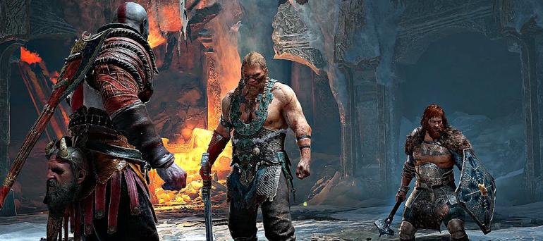

Tudo sobre o jogo que ganhou o prêmio GOTY em 2018
Lore do jogo
Muitos anos depois de Kratos desencadear o inferno na Grécia Antiga e deixar o Olimpo de joelhos, ele vive uma vida tranquila em Midgard com a sua esposa Faye e o seu filho Atreus. O jogo começa pouco depois da morte de Faye, com Kratos e Atreus a prepararem-se para realizar o seu último desejo: espalhar as suas cinzas no pico mais alto dos nove reinos.
Antes da sua partida, um misterioso homem tatuado confronta Kratos e provoca-o agressivamente para uma luta que destrói praticamente toda a paisagem em redor. Este estranho tem poderes divinos mas no final é derrotado por Kratos, que parte o seu pescoço e atira o seu corpo de um penhasco. Com medo de que a sua casa não seja mais segura, Kratos diz a Atreus para arrumar as suas coisas.
Jogabilidade
Uma excelente história não faz sozinha um jogo. Com uma campanha de mais de 20 horas, ficaria muito complicado terminar God of War se o jogo não fosse divertido de se jogar. E ele é, muito! Apesar do combate ser um dos elementos mais centrais da franquia, vou deixar ele pra depois e começar falando da exploração, que mencionei rapidamente no parágrafo anterior.
Diferente dos jogos anteriores, o mundo do novo God of War é aberto, permitindo não só voltar para regiões já visitadas, mas também explorar outras localidades completamente opcionais. Grande parte dessa exploração é feita de barco, onde também ocorrem vários diálogos extremamente interessantes, especialmente depois do encontro com o personagem Mimir. Essas localidades opcionais muitas vezes liberam missões opcionais, chamadas de “favores”, ou oferecem recursos para melhorias das armas e armaduras, além de experiência. Os favores costumam ser recompensados também com esses recursos, mas os jogadores vão se ver querendo realizar essas missões não só pelos prêmios, mas pelas atividades que elas oferecem em si. As missões paralelas nunca parecem “encheção de linguiça”, sempre aprofundando o enredo, trazendo mais informações sobre a mitologia nórdica e até novos cenários que o jogador nunca encontraria na campanha principal. God of War trata o conhecimento como recompensa e isso é muitíssimo bem-vindo. O jogo incentiva o jogador a se perder de vez em quando para ver em quais segredos do mundo ele vai esbarrar e o resultado é sempre muito satisfatório.

Quem está por trás dessa obra de arte ?
A empresa que criou o God of War 2018, foi a desenvolvedora de jogos norte-americana, Santa Monica Studio liderada por Cory Barlog